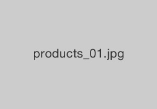
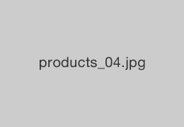
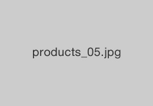
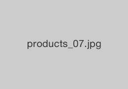
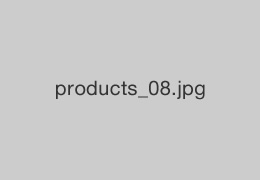

全國共16處營業據點，專門提供嚴選有機蔬菜。

商品介紹
ORGANIC LIFE STORE的商品介紹。
-
季節性蔬菜
-

黃椒
豐富的色彩能讓胃口大開！
果肉厚實，建議作成醬燒口味食用。150元
-
白菜
新鮮白菜總能帶來鮮脆的口感。
光以鹽醃製就十分好吃。300元
-
小蕃茄
適合當作便當菜的小蕃茄。
10個一包，能盡情地食用。500元
-
-
建議商品
-

紅蘿蔔
水嫩嫩的紅蘿蔔。
直接作成沙拉也好吃。450元
-

綠蕃茄
回味無窮的綠蕃茄！
今年也登場囉！550元
-
-
葉菜類
-
款冬
讓人上癮的苦味。
請將款冬作成天婦羅食用。450元
-
-
果實類
-

茄子
又大又鮮嫩的茄子。
300元
-
-
根莖類
-

馬鈴薯
維他命C超豐富的馬鈴薯。
350元
-